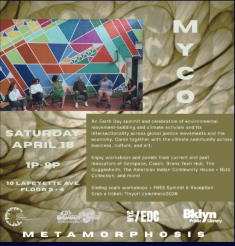

MYCO.
NYC's gathering ground for climate leaders, artists, and activists — an Earth Day summit celebrating movement-building.

Overview
MYCO connects youth, leaders, and organizations around climate action and environmental justice through workshops, discussions, art, and wellness experiences that inspire learning and connection. MYCO represents the resilience of mycelial networks, embodying NYC's environmental justice movement through art, advocacy, and entrepreneurship — a moment for pause, play, inspiration, and restoration as much as a call to action.
What it brings together
- 01
Community engagement
Workshops, discussions, art, and wellness experiences open to the whole community.
- 02
Cross-sector connection
Bringing together climate leaders, professionals, artists, and activists in one space.
- 03
Celebrating changemakers
Recognizing local changemakers and fostering collaboration toward a more sustainable, equitable future.
Want to lead this?
MYCO is looking for a new lead this term. If Earth Month summits are your thing, reach out.